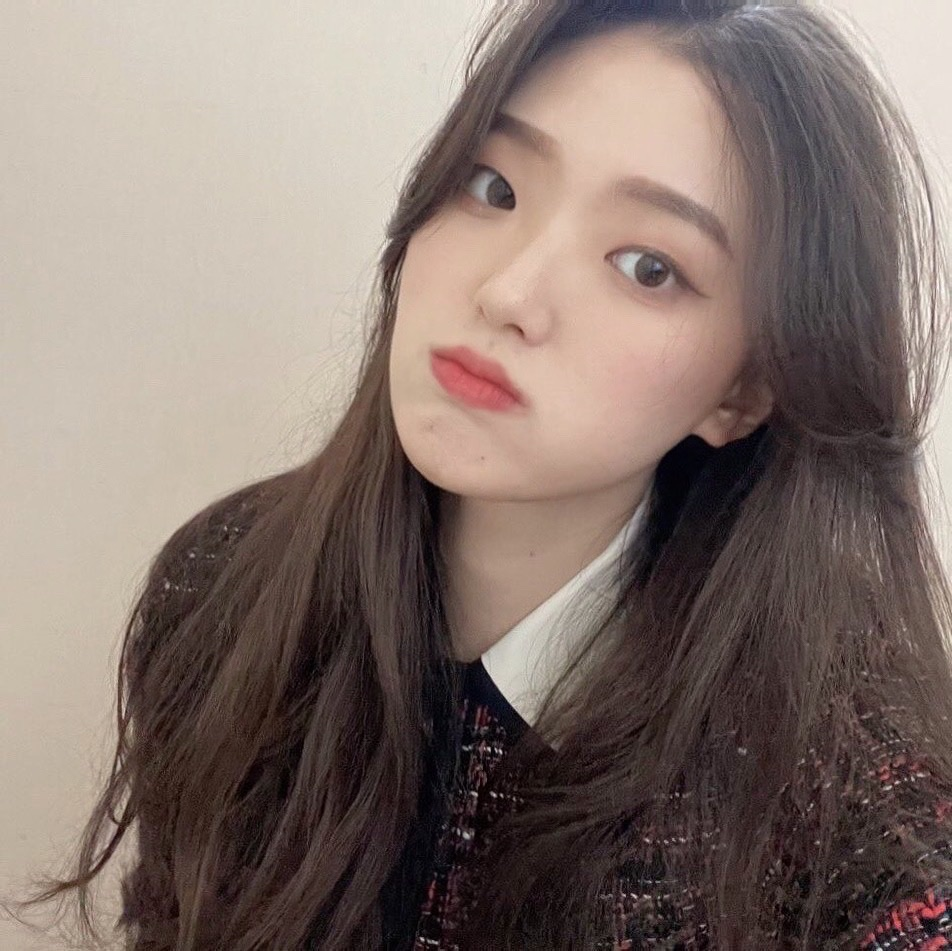

소개
임수린
안녕하세요. 저는 멋쟁이 사자처럼 9기, 의상학과 20학번 임수린입니다.
저는 작년에 방영한 드라마 스타트업을 보고 코딩에 관심 생겼습니다.
프로그래밍 관련 지식은 아직 많이 부족하지만(코린이>_<) 1년 동안 열심히 활동해서 원하는 웹을 손쉽게 만들수 있는 사람으로 성장하고 싶습니다.
성격
저는 다양한 사람들과 어울리기 좋아하는 사교적이고 외향적인 사람입니다.
처음 보는 사람과 대화하며 가까워지는 과정을 좋아하기 때문에 멋사에서 하루빨리 우리 스터디 조원들 만나고 싶습니다!
취미
저는 문화콘텐츠에 관심이 많아 집에 있을 때에는 주로 넷플릭스로 영화나 예능을 보면서 시간을 보냅니다.
그 외에도 다양한 예술분야에 관심이 많아 연극, 뮤지컬을 보거나 전시회를 관람하는 것을 좋아합니다.
최근에는 요리에도 관심이 생겨 유튜브로 요리 레시피를 찾아보거나 음식 재료를 구매하면서 행복을 얻고 있습니다.
가끔 여유가 있는 날에는 직접 가족들의 저녁을 만들기도 합니다.